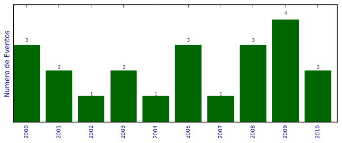

Total de participação em eventos

Número total de itens: 22
2010
| 1. | II Encontro de Físicos do RS.Clusters de Metais de Transição: o caso de 13 átomos. 2010. (Encontro). |
| 2. | March Meeting.Density functional theory investigation of 3d, 4d, and 5d 13-atom. 2010. (Encontro). |
2009
| 1. | APS March Meeting.Finding structures with specific properties in complex configurational spaces using multi-target inverse band structure approach. 2009. (Encontro). |
| 2. | IV Encontro da rede Theo-Nano.IV Encontro da Rede Theo-Nano. 2009. (Encontro). |
| 3. | XXXII Encontro Nacional de Física da Matéria Condensada.Atomic structure of Rh, Pd, and Pt 13-atoms clusters. 2009. (Encontro). |
| 4. | XXXII Encontro Nacional de Física da Matéria Condensada.Size-dependence of the structural, electronic and mechanical properties of InAs and InP nanowires: A first principles calculation. 2009. (Encontro). |
2008
| 1. | APS March Meeting. Inverse band strucutre optimization of (InAs)/(GaAs) (001) nanostructures for thermophotovoltaics. 2008. (Congresso). |
| 2. | Encontro Nacional de Física da Matéria Condensada.Nanofios de GaAs/AlGaAs. 2008. (Encontro). |
| 3. | III Encontro da Rede Theo-Nano.Finding structures with specific properties: the inverse band structure approach. 2008. (Encontro). |
2007
| 1. | APS March Meeting.Inverse Band Strucutre determination of optical properties of (In,Ga)/(Ga,Sb) alloys. 2007. (Encontro). |
2005
| 1. | .VI Encontro sobre Diamantes, Carbono Amorfo, Nanotubos e Materiais Relacionados. 2005. (Encontro). |
| 2. | XII Brazilian Workshop on Semiconductor Physics.XII Brazilian Workshop on Semiconductor Physics. 2005. (Outra). |
| 3. | XXVIII Encontro Nacional de Física da Matéria Condensada.XXVIII Encontro Nacional de Física da Matéria Condensada. 2005. (Encontro). |
2004
| 1. | XXVII ENFMC.XXVII Encontro Nacional de Física da Matéria Condensada. 2004. (Encontro). |
2003
| 1. | .XXVI Encontro Nacional de Física da Matéria Condensada. 2003. (Encontro). |
| 2. | Workshop on Surface Science: Structural and Electronic Properties of Nanodeposits.I Encontro de pesquisadores na área de ciência de nanoestruturas da rede brasileira de pesquisa em materiais nanoestruturados. 2003. (Encontro). |
2002
| 1. | VIII Escola Brasileira de Estrutura Eletrônica.VIII Escola Brasileira de Estrutura Eletrônica. 2002. (Outra). |
2001
| 1. | XI Símposio Brasileiro de Química Teórica.XI Simpósio Brasileiro de Química Teórica. 2001. (Simpósio). |
| 2. | XXIV Encontro Nacional de Física da Matéria Condensada.XXIV Encontro Nacional de Física da Matéria Condensada. 2001. (Encontro). |
2000
| 1. | VII Escola Brasileira de Estrutura Eletrônica.VII Escola Brasileira de Estrutura Eletrônica. 2000. (Outra). |
| 2. | XV Jornada Acadêmica Integrada.XV Jornada Acadêmica Integrada. 2000. (Outra). |
| 3. | XXIII Encontro Nacional de Física da Matéria Condensada.XXIII Encontro Nacional de Física da Matéria Condensada. 2000. (Encontro). |
(*) Relatório criado com produções desde 1999 até HOJE
Data de processamento: 09/04/2014 19:20:33